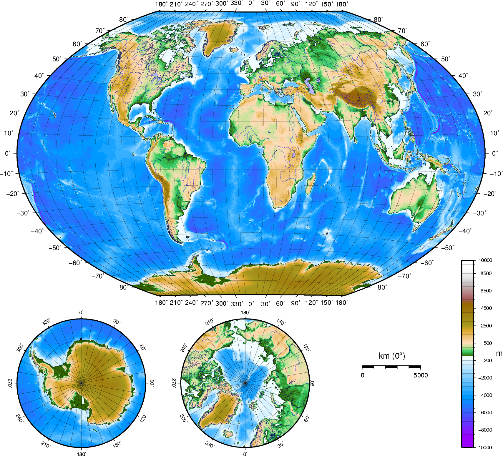

GEOFIS
https://es.wikipedia.org/wiki/Geograf%C3%ADa_f%C3%ADsica
https://es.wikipedia.org/wiki/Geograf%C3%ADa_f%C3%ADsica
La geografía física (conocida en un tiempo como fisiografía, término ahora en desuso) es la rama de la geografía que estudia en forma sistémica y espacial, la superficie terrestre considerada en su conjunto y específicamente, el espacio geográfico natural.
Constituye uno de los tres grandes campos del conocimiento geográfico; los otros son la geografía humana cuyo objeto de estudio comprende el espacio geográfico humanizado y la geografía regional que ofrece un enfoque unificador, estudiando los sistemas geográficos en forma integrada.
La geografía física se preocupa (según Strahler ) de los procesos que son el resultado de dos grandes flujos de energía: el flujo de radiación solar que dirige las temperaturas de la superficie junto al movimiento de los fluidos, y el flujo de calor desde el interior de la Tierra que se manifiesta en los materiales de los estratos superiores de la corteza terrestre. Estos flujos interactúan en la superficie terrestre que es el campo de estudio del geógrafo físico.1 Son diversas las disciplinas geográficas que estudian en forma específica las relaciones de los componentes de la superficie terrestre. La geografía física enfatiza el estudio y la comprensión de los patrones y procesos geográficos del ambiente natural, haciendo abstracción por razones metodológicas del ambiente cultural que es el dominio de la Geografía humana. Ello significa que, aunque las relaciones entre estos dos campos de la Geografía existen y son muy importantes, cuando se estudia uno de dichos campos, es necesario excluir al otro de alguna manera, con el fin de poder profundizar el enfoque y los contenidos.
La metodología geográfica tiende a relacionar estos campos al proporcionar un marco seguro para la localización, distribución y representación del espacio geográfico además de emplear herramientas tales como los sistemas de información geográfica o el desarrollo de mapas que sirven a ambas especialidades.
Obra publicada con Licencia Creative Commons Reconocimiento Compartir igual 4.0